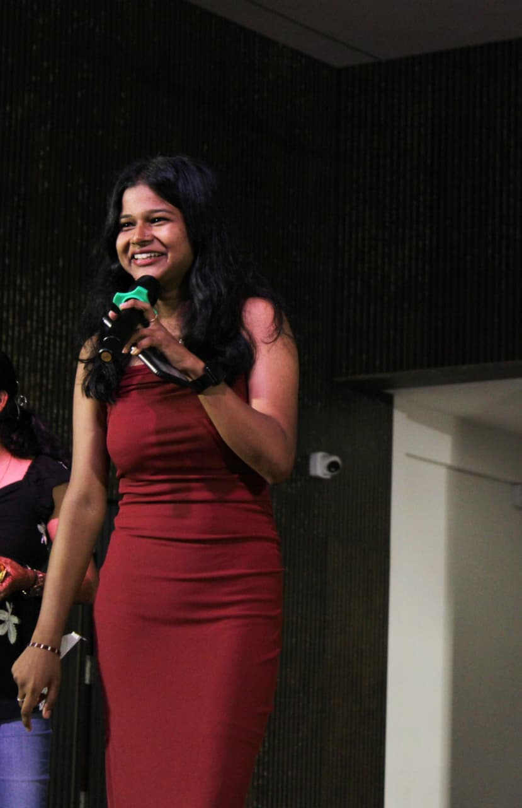

Anchor · Voice-over artist · Content creator
Kundapura, Karnataka
A trilingual voice for live stages, podcasts and online courses. Clear diction, easy audience rapport, and a storytelling style that keeps a room with you.

Live mic
Raw clips from college programmes. Tap play to watch with sound.
Hosting a programme from the main stage.
Hosting the farewell at Canara Engineering College.
Working the hall during the farewell.
A full-stage programme in a large auditorium.
About
I have co-anchored Freshers' Day and anchored the farewell programme at Canara Engineering College, keeping segments moving and the audience involved from start to finish.
Off stage, I host podcasts, record narration for online courses and make voice-led content for YouTube and Instagram under Voice_Waves.
Freshers' Day, farewell and other college programmes. Scripted flow, live improvisation, audience interaction.
Three podcasts hosted, plus podcast shoots. Conversational, unhurried, mic-ready.
Online course narration with careful pronunciation, steady pacing and an engaging tone.
Short-form video and storytelling formats for YouTube and Instagram, from idea to script.
Background
Contact
Events, podcasts, course narration and RJ opportunities. Send a message with the date, venue and language.